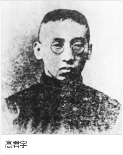

- 峥嵘岁月
- 高君宇简介
- 薪火相传
入党指南
中国共产党党章
党史上的今天
党课模拟端口
人大历程
- 山大青年运动史

高君宇（1896—1925），原名高尚德，字锡三。山西静乐人。五四运动时为北京大学学生会负责人。1920年与邓中夏共同组织马克思学说研究会。1921年加入中国共产党。1922年当选为中国社会主义青年团一届中央执行委员。他还是中国共产党第二、三届中央委员。1925年在北京病逝。
简介
高君宇原名尚德，字锡三，号君宇。1896年生于山西省静乐县（今属娄烦县）。
1916年，高君宇考入北京大学，在那里接受了新思想的启蒙教育。十月革命后，高君宇和邓中夏、黄日葵、许德珩等同学，经常聚集在李大钊那里，共同研究马克思主义理论和十月革命的经验，寻求改造中国社会的方法和道路。五四运动时，作为北京大学学生会负责人之一的高君宇，是这一反帝爱国运动中的主要骨干。5月4日那天，他同爱国学生冲入卖国贼曹汝霖的住宅，痛打了章宗祥并火烧赵家楼曹宅。当运动遭到反动军阀镇压时，他置生命危险于不顾，毅然担任了北京大学驻北京学生联合会的代表，领导爱国学生继续斗争。为了进一步唤醒民众，高君宇于1919年10月加入了邓中夏主持的平民教育讲演团，并很快成为该团的主要骨干和领导成员。他和邓中夏等人一起，先在城市组织讲演，后又组织力量深入农村、工厂讲演。
1920年3月，在李大钊指导下，高君宇和邓中夏等北大19名学生秘密组织了马克思学说研究会，这是我国最早研究和宣传马克思主义的团体之一。一年多以后，该会在北大成为公开研究传播马克思主义的团体。他还和其他会员一起自筹资金，筹办了一个附属该会的图书馆——“亢慕尼斋”。
在传播马克思主义的同时，高君宇十分注意工人运动。他经常深入到工人中间进行调查、讲演，启发工人的觉悟。他和邓中夏以长辛店为据点开展活动，在京汉铁路沿线创办工人子弟学校，建立工人俱乐部和职工联合会组织，领导北方早期的工人运动。
同年10月，北京共产主义小组成立，高君宇是这个小组最早的成员之一。他受小组的委托加紧筹建青年团组织，经一个月的努力，组建了北京社会主义青年团，当选为第一任书记。不久，高君宇又被派到山西筹建社会主义青年团。经过他的耐心细致工作，太原社会主义青年团于1921年5月1日成立。为了使太原社会主义青年团有一个宣传革命思想的阵地，高君宇和贺昌、王振翼等改组了《平民周报》编辑部，改组后的《平民周报》在宣传马列主义，引导青年进行革命斗争方面起了重大作用。
中国共产党成立后，1922年1月，高君宇作为中共代表之一参加了共产国际在莫斯科举行的远东各国共产党及民族革命团体第一次代表大会。回国后，5月到广州出席了中国社会主义青年团第一次全国代表大会，被选为团中央委员。7月他又出席了党的第二次全国代表大会，会上，被选为中央委员。
同年9月，根据党的西湖特别会议的决议，党中央机关刊物《向导》正式出版，高君宇任该刊编辑兼记者，以后还担任了北方区党委机关刊物《政治生活》的编辑。
1923年2月，爆发了京汉铁路工人大罢工。高君宇等受党的委派，领导长辛店工人同反动军阀进行了不屈不挠的斗争。2月7日，直系军阀对工人进行了野蛮的大屠杀，高君宇镇定机警毫不畏缩，仍然四处奔走处理惨案的善后工作。他怀着对军阀的无比愤慨，不仅撰写了抨击军阀统治的
文章，而且和罗章龙编写了《京汉工人流血记》一书，由他作了题为《工人需要一个政党》的后序，号召工人在党领导下继续同军阀进行斗争。6月，高君宇参加了党的“三大”。大会确定了关于国共合作、建立革命统一战线的策略。会后，高君宇担任了党中央教育委员会委员。从此他把主要精力投入建立统一战线的工作。1924年1月，国民党召开第一次全国代表大会。会后不久，高君宇受北京党组织的指派，到山西筹建党组织和筹划山西地区国共合作等事宜。
后来，高君宇受党的委托，曾担任孙中山的秘书。当帝国主义支持反动商团发动叛乱时，高君宇率领工团军英勇奋战。在巷战激烈之际，他乘的指挥车被子弹击穿，高君宇负伤之后，不顾个人安危，裹伤再战，直至胜利。
冯玉祥在十月发动“北京政变”，电邀孙中山北上，共商国事。高君宇随同孙中山抵京。高君宇本来就有肺病，经常咯血，在广州的紧张战斗生活，使他的身体更加孱弱。随孙中山北上，一路劳顿，病情愈加沉重。他在北京住医院后，仍一心想着党的事业。病情稍有好转，他一再要求出院，出院后，便投入了国民会议促成会的紧张筹备工作。1925年3月1日国民会议促成会全国代表大会开幕，他是代表之一。就在这时，他突患急性阑尾炎，经抢救无效，于3月5日病逝，年仅29岁
生平
■“五四”运动中，高君宇等十几个学生冲进曹汝霖的住宅，痛打章宗祥
高君宇原名尚德，字锡三，号君宇。1896年生于山西省静乐县（今属娄烦县）。1
1912年考入山西省第一中学，因才华出众，以“十八学士登瀛州”而享誉省城。少年高君宇对社会政治问题非常关心，订购了《晨报》、《申报》、《康梁文钞》等进步书刊研读。1915年，他参加了反对袁世凯与日本签订丧权辱国的“二十一条”的斗争，捐款翻印“二十一条”全文广为散发，组织游行和街头演讲，声援蔡锷等人护国反袁斗争。翌年考入北京大学英语系学习。
在当时进步思想的发源地北京，高君宇受到激进的新文化和新思想的影响，很快成为学生运动的领袖。1918年5月，他参加了反对北洋政府签订《中日共同防敌军事协定》活动，成为近代中国学生运动史上第一次公开的游行请愿活动。
1919年5月4日学生爱国游行时，高君宇是组织和参加的骨干之一，和许德珩等十几个学生冲进赵家楼，痛打签订卖国条约的官员章宗祥，演出了“五四”运动壮丽的一幕。随后，他代表北大学生参加了学联的领导工作。
■高君宇参加北大马克思学说研究会，筹办图书馆，命名为“亢慕尼斋”
■共产国际代表来华帮助建党，高君宇是重要对象之一
■高君宇曾做过孙中山的秘书，协助孙中山平定商团叛乱
1919年10月，高君宇担任邓中夏主持的平民教育讲演团骨干和领导，同邓中夏一起在城市、农村讲演，宣传进步。1920年3月，他参加了由李大钊指导、有19名学生秘密组成的北大马克思学说研究会，并与其他会员一起筹办了附属研究会的图书馆，命名为“亢慕尼斋”（共产主义的译音）。
共产国际远东局代表维经斯基来华帮助中国先进分子建党，高君宇也是重要对象之一。1920年10月，李大钊在北京建立共产主义小组，高君宇是首批成员之一，成为山西省的第一个共产党人。
高君宇于1922年7月党的“二大”上当选中央委员，担任党报《向导》的编辑。翌年在党的“三大”上担任了中央教育委员会委员。1924年年初，他又同李大钊、毛泽东等一起以共产党员的身份参加了国民党第一次代表大会，曾担任过孙中山的秘书。
广州商团叛乱时，高君宇的指挥车曾被叛军子弹击穿，他裹伤再战，协助孙中山迅速平定了商团叛乱。1924年10月，他随孙中山北上，到北京因肺病住进德国医院治疗，并抱病出席了1925年1月在上海开幕的中共“四大”和3月的国民会议。同年3月，高君宇因猝发急性阑尾炎割治无效不幸逝世，年仅29岁。
背景
建党前一年，他组建北京社会主义青年团，并当选第一任书记
“五四”时期，是中国社会启蒙的思想解放高潮，身为中年人的陈独秀创办《新青年》，唤起了一代年轻人走出旧《四书》、《五经》的思想束缚，由追求科学、民主进而追求革命。
此时风华正茂的高君宇，作为李大钊、陈独秀的学生，紧紧跟随着这一时代，并成为代表当时最先进思想的弄潮儿。
当时的年轻人最容易接受新思想，建立共产党和建立革命的青年团组织几乎是同步进行的。高君宇不仅是党的创始人，同时还是社会主义青年团（即共青团前身）的创始人之一。
1920年秋，他就受组织委托组建了北京社会主义青年团，当选为第一任书记。翌年5月，又到故乡山西，成立了太原社会主义青年团。
1921年年底，高君宇等54人赴苏联参加远东共产党和各民族革命团体代表大会，受到列宁的接见，还被大会选为执委会委员。
回国后，他又出席了在广州召开的中国社会主义青年团第一次代表大会，参与制定了团的纲领，当选为第一届团中央执行委员。人们回顾共青团的历史，不能忘记这位开拓者。
故事
如今的北京陶然亭公园内，有高君宇和恋人石评梅之墓，述说着两枚象牙戒指引发的动人情话
高君宇对陶然亭情有独钟。陶然亭建于清康熙年间，从清末到民初就是仁人志士进行革命活动的地方。高君宇和李大钊、毛泽东、周恩来、邓中夏等人曾在这里召开秘密会议，商讨中国革命前途，同时也和石评梅经常在此漫步。
石评梅是高君宇生命中最挚爱的女性，生于1902年，山西平定人，是“五四” 时期著名的青年女作家，著有《涛语》、《祷告》、《偶然草》等书。他们在同乡会上相识，共同的进步追求和兴趣使二人相互吸引。高君宇家中曾有过包办的不幸婚姻，在心灵受过创伤后对石评梅有火一般的恋情。
石评梅虽然也爱对方，却因初恋失败抱定独身主义的宗旨而固守着“冰雪友谊” 的藩篱。高君宇内心十分痛苦，但仍然以尊重的态度写道：“你的所愿，我愿赴汤蹈火以求之；你的所不愿，我愿赴汤蹈火以阻之。不能这样，我怎能说是爱你！”
为了表明自己对爱情的忠贞，高君宇特意从广州买了两枚象牙戒指，一枚连同平定商团叛乱时用过的子弹壳寄给北京的石评梅作为生日留念，另一枚戴在自己手上。石评梅戴上了这枚特殊意义的象牙戒指，“用象牙的洁白和坚实，来纪念我们自己静寂像枯骨似的生命。”
高君宇患病动手术后于第二天突然去世，对石评梅犹如青天霹雳，后悔当初没有接受他的求爱。她在高君宇的墓碑上题写了他生前的诗句：“我是宝剑，我是火花，我愿生如闪电之耀亮，我愿死如彗星之迅忽。”并作《墓畔哀歌》表达刻骨的思念之情：“假如我的眼泪真凝成一粒一粒珍珠，到如今我已替你缀织成绕你玉颈的围巾。假如我的相思真化作一颗一颗红豆，到如今我已替你堆集永久勿忘的爱心。我愿意燃烧我的肉身化成灰烬，我愿放浪我的热情怒涛汹涌，让我再见见你的英魂。”
1928年9月，年仅26岁的才女石评梅因悲伤过度，在泣血哀吟中走完短短的一生，人们也把她葬于陶然亭内的高君宇墓旁，“生前未能相依共处，愿死后得并葬荒丘”。
高君宇在返京探望石评梅的途中特意在天津看望了邓颖超，并把周恩来的求爱信转给了她，促成了一对革命伴侣
邓大姐说：“我和恩来对君宇和评梅女士的相爱非常仰慕，对他们没有实现结婚的愿望，却以君宇不幸逝世的悲剧告终，深表同情。”
高君宇为人热情，好交友，与同时代的革命家有着很深的友谊。是他促成了周恩来和邓颖超的结合。
1925年年初，高君宇和周恩来互相吐露了心中的爱情隐秘。27岁的周恩来当时虽为赫赫有名的黄埔军校政治部主任，在恋爱问题上毕竟还有些腼腆，正暗恋着天津达仁女校的教师邓颖超，但一直未能向心爱的姑娘表白心迹。高君宇欣然当起了鸿雁传书的使者，在返京探望石评梅的途中，特意在天津看望了邓颖超，并把周恩来的求爱信转给了她，促成了一对革命伴侣。
周总理和邓大姐对这段情一直念念不忘，新中国成立后，他们曾几度到陶然亭的墓前凭吊。1965年6月，周总理在审批北京城市规划总图时，特别强调要保存“高石之墓”，他说：“革命与恋爱没有矛盾，留着它对青年人也有教育。”邓大姐也撰文表达对他们的缅怀：“我和恩来对君宇和评梅女士的相爱非常仰慕，对他们没有实现结婚的愿望，却以君宇不幸逝世的悲剧告终，深表同情。